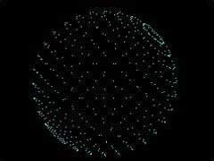

|
第25課 |
 |
|  |
變形和從文件中加載3D物體:
在這一課中，你將學會如何從文件加載3D模型，並且平滑的從一個模型變換為另一個模型。 |
|
 |
 |
歡迎來到這激動人心的一課，在這一課裡，我們將介紹模型的變形。需要注意的是各個模型必須要有相同的頂點，才能一一對應，並應用變形。
在這一課裡，我們同樣要教會你如何從一個文件中讀取模型數據。
文件開始的部分和前面一樣，沒有任何變化。 |
 |
|
我們結下來添加幾個旋轉變量，用來記錄旋轉的信息。並使用cx,cy,cz設置物體在屏幕上的位置。
變量key用來記錄當前的模型，step用來設置相鄰變形之間的中間步驟。如step為200，則需要200次，才能把一個物體變為另一個物體。
最後我們用一個變量來設置是否使用變形。 |
|
GLfloat xrot,yrot,zrot, // X, Y & Z 軸的旋轉角度
xspeed,yspeed,zspeed, // X, Y & Z 軸的旋轉速度
cx,cy,cz=-15; // 物體的位置
int key=1; // 物體的標識符
int step=0,steps=200; // 變換的步數
bool morph=FALSE; // 是否使用變形
|
下面的結構定義一個三維頂點 |
|
typedef struct
{
float x, y, z;
} VERTEX;
|
下面的結構使用頂點來描述一個三維物體 |
|
typedef struct // 物體結構
{
int verts; // 物體中頂點的個數
VERTEX *points; // 包含頂點數據的指針
} OBJECT;
|
maxver用來記錄各個物體中最大的頂點數，如一個物體使用5個頂點，另一個物體使用20個頂點，那麼物體的頂點個數為20。
結下來定義了四個我們使用的模型物體，並把相鄰模型變形的中間狀態保存在helper中，sour保存原模型物體，dest保存將要變形的模型物體。 |
|
int maxver; // 最大的頂點數
OBJECT morph1,morph2,morph3,morph4, // 我們的四個物體
helper,*sour,*dest; // 幫助物體,原物體，目標物體
|
WndProc()函數沒有變化 |
|
|
下面的函數用來為模型分配保存頂點數據的內存空間 |
|
void objallocate(OBJECT *k,int n)
{
k->points=(VERTEX*)malloc(sizeof(VERTEX)*n); // 分配n個頂點的內存空間
}
|
下面的函數用來釋放為模型分配的內存空間 |
|
void objfree(OBJECT *k)
{
free(k->points);
}
|
下面的代碼用來讀取文件中的一行。
我們用一個循環來讀取字符，最多讀取255個字符，當遇到'\n'回車時，停止讀取並立即返回。 |
|
void readstr(FILE *f,char *string) // 讀取一行字符
{
do
{
fgets(string, 255, f); // 最多讀取255個字符
} while ((string[0] == '/') || (string[0] == '\n')); // 遇到回車則停止讀取
return; // 返回
}
|
下面的代碼用來加載一個模型文件，並為模型分配內存，把數據存儲進去。 |
|
void objload(char *name,OBJECT *k) // 從文件加載一個模型
{
int ver; // 保存頂點個數
float rx,ry,rz; // 保存模型位置
FILE *filein; // 打開的文件句柄
char oneline[255]; // 保存255個字符
filein = fopen(name, "rt"); // 打開文本文件，供讀取
readstr(filein,oneline); // 讀入一行文本
sscanf(oneline, "Vertices: %d\n", &ver); // 搜索字符串"Vertices: "，並把其後的頂點數保存在ver變量中
k->verts=ver; // 設置模型的頂點個數
objallocate(k,ver); // 為模型數據分配內存
|
下面的循環，讀取每一行（即每個頂點）的數據，並把它保存到內存中?/td>
| |
for (int i=0;i<ver;i++) // 循環所有的頂點
{
readstr(filein,oneline); // 讀取一行數據
sscanf(oneline, "%f %f %f", &rx, &ry, &rz); // 把頂點數據保存在rx,ry,rz中
k->points[i].x = rx; // 保存當前頂點的x坐標
k->points[i].y = ry; // 保存當前頂點的y坐標
k->points[i].z = rz; // 保存當前頂點的z坐標
}
fclose(filein); // 關閉文件
if(ver>maxver) maxver=ver; // 記錄最大的頂點數
}
|
下面的函數根據設定的間隔，計算第i個頂點每次變換的位移 |
|
VERTEX calculate(int i) // 計算第i個頂點每次變換的位移
{
VERTEX a;
a.x=(sour->points[i].x-dest->points[i].x)/steps;
a.y=(sour->points[i].y-dest->points[i].y)/steps;
a.z=(sour->points[i].z-dest->points[i].z)/steps;
return a;
}
|
ReSizeGLScene()函數沒有變化 |
|
GLvoid ReSizeGLScene(GLsizei width, GLsizei height)
|
下面的函數完成初始化功能，它設置混合模式為半透明 |
|
int InitGL(GLvoid)
{
glBlendFunc(GL_SRC_ALPHA,GL_ONE); // 設置半透明混合模式
glClearColor(0.0f, 0.0f, 0.0f, 0.0f); // 設置清除色為黑色
glClearDepth(1.0); // 設置深度緩存中值為1
glDepthFunc(GL_LESS); // 設置深度測試函數
glEnable(GL_DEPTH_TEST); // 啟用深度測試
glShadeModel(GL_SMOOTH); // 設置著色模式為光滑著色
glHint(GL_PERSPECTIVE_CORRECTION_HINT, GL_NICEST);
|
下面的代碼用來加載我們的模型物體 |
|
maxver=0; // 初始化最大頂點數為0
objload("data/sphere.txt",&morph1); // 加載球模型
objload("data/torus.txt",&morph2); // 加載圓環模型
objload("data/tube.txt",&morph3); // 加載立方體模型
|
第四個模型不從文件讀取，我們在（-7，-7，-7）-（7，7，7）之間隨機生成模型點,它和我們載如的模型都一樣具有486個頂點。 |
|
objallocate(&morph4,486); // 為第四個模型分配內存資源
for(int i=0;i<486;i++) // 隨機設置486個頂點
{
morph4.points[i].x=((float)(rand()%14000)/1000)-7;
morph4.points[i].y=((float)(rand()%14000)/1000)-7;
morph4.points[i].z=((float)(rand()%14000)/1000)-7;
}
|
初始化中間模型為球體，並把原和目標模型都設置為球 |
|
objload("data/sphere.txt",&helper);
sour=dest=&morph1;
return TRUE; // 初始化完成，成功返回
}
|
下面是具體的繪製代碼，向往常一樣我們先設置模型變化，以便我們更好的觀察。 |
|
void DrawGLScene(GLvoid)
{
glClear(GL_COLOR_BUFFER_BIT | GL_DEPTH_BUFFER_BIT); // 清空緩存
glLoadIdentity(); // 重置模型變換矩陣
glTranslatef(cx,cy,cz); // 平移和旋轉
glRotatef(xrot,1,0,0);
glRotatef(yrot,0,1,0);
glRotatef(zrot,0,0,1);
xrot+=xspeed; yrot+=yspeed; zrot+=zspeed; // 根據旋轉速度，增加旋轉角度
GLfloat tx,ty,tz; // 頂點臨時變量
VERTEX q; // 保存中間計算的臨時頂點
|
接下來我們來繪製模型中的點，如果啟用了變形，則計算變形的中間過程點。 |
|
glBegin(GL_POINTS); // 點繪製開始
for(int i=0;i<morph1.verts;i++) // 循環繪製模型1中的每一個頂點
{
if(morph) q=calculate(i); else q.x=q.y=q.z=0; // 如果啟用變形，則計算中間模型
helper.points[i].x-=q.x;
helper.points[i].y-=q.y;
helper.points[i].z-=q.z;
tx=helper.points[i].x; // 保存計算結果到x,y,z變量中
ty=helper.points[i].y;
tz=helper.points[i].z;
|
為了讓動畫開起來流暢，我們一共繪製了三個中間狀態的點。讓變形過程從藍綠色向藍色下一個狀態變化。 |
|
glColor3f(0,1,1); // 設置顏色
glVertex3f(tx,ty,tz); // 繪製頂點
glColor3f(0,0.5f,1); // 把顏色變藍一些
tx-=2*q.x; ty-=2*q.y; ty-=2*q.y; // 如果啟用變形，則繪製2步後的頂點
glVertex3f(tx,ty,tz);
glColor3f(0,0,1); // 把顏色變藍一些
tx-=2*q.x; ty-=2*q.y; ty-=2*q.y; // 如果啟用變形，則繪製2步後的頂點
glVertex3f(tx,ty,tz);
}
glEnd(); // 繪製結束
|
最後如果啟用了變形，則增加遞增的步驟參數，然後繪製下一個點。 |
|
// 如果啟用變形則把變形步數增加
if(morph && step<=steps)step++; else { morph=FALSE; sour=dest; step=0;}
return TRUE; // 一切OK
}
|
KillGLWindow() 函數基本沒有變化，只是添加釋放5個模型內存的代碼 |
|
objfree(&morph1); // 釋放模型1內存
objfree(&morph2); // 釋放模型2內存
objfree(&morph3); // 釋放模型3內存
objfree(&morph4); // 釋放模型4內存
objfree(&helper); // 釋放模型5內存
|
CreateGLWindow() 函數沒有變化 |
|
BOOL CreateGLWindow()
LRESULT CALLBACK WndProc()
|
在WinMain()函數中，我們添加了一些鍵盤控制的函數 |
|
if(keys[VK_PRIOR]) // PageUp鍵是否被按下
zspeed+=0.01f; // 按下增加繞z軸旋轉的速度
if(keys[VK_NEXT]) // PageDown鍵是否被按下
zspeed-=0.01f; // 按下減少繞z軸旋轉的速度
if(keys[VK_DOWN]) // 下方向鍵是否被按下
xspeed+=0.01f; // 按下增加繞x軸旋轉的速度
if(keys[VK_UP]) // 上方向鍵是否被按下
xspeed-=0.01f; // 按下減少繞x軸旋轉的速度
if(keys[VK_RIGHT]) // 右方向鍵是否被按下
yspeed+=0.01f; // 按下增加沿y軸旋轉的速度
if(keys[VK_LEFT]) // 左方向鍵是否被按下
yspeed-=0.01f; // 按下減少沿y軸旋轉的速度
if (keys['Q']) // Q鍵是否被按下
cz-=0.01f; // 是則向屏幕裡移動
if (keys['Z']) // Z鍵是否被按下
cz+=0.01f; // 是則向屏幕外移動
if (keys['W']) // W鍵是否被按下
cy+=0.01f; // 是則向上移動
if (keys['S']) // S鍵是否被按下
cy-=0.01f; // 是則向下移動
if (keys['D']) // D鍵是否被按下
cx+=0.01f; // 是則向右移動
if (keys['A']) // A鍵是否被按下
cx-=0.01f; // 是則向左移動
|
1，2，3，4鍵用來設置變形的目標模型 |
|
if (keys['1'] && (key!=1) && !morph) // 如果1被按下，則變形到模型1
{
key=1;
morph=TRUE;
dest=&morph1;
}
if (keys['2'] && (key!=2) && !morph) // 如果2被按下，則變形到模型1
{
key=2;
morph=TRUE;
dest=&morph2;
}
if (keys['3'] && (key!=3) && !morph) // 如果3被按下，則變形到模型1
{
key=3;
morph=TRUE;
dest=&morph3;
}
if (keys['4'] && (key!=4) && !morph) // 如果4被按下，則變形到模型1
{
key=4;
morph=TRUE;
dest=&morph4;
}
|
我希望你能喜歡這個教程，相信你已經學會了變形動畫。
Piotr Cieslak 的代碼非常的新穎，希望通過這個教程你能知道如何從文件中加載三維模型。
這份教程化了我三天的時間，如果有什麼錯誤請告訴我。
 |
版權與使用聲明:
我是個對學習和生活充滿激情的普通男孩,在網絡上我以DancingWind為暱稱，我的聯繫方式是zhouwei02@mails.tsinghua.edu.cn，如果你有任何問題，都可以聯繫我。
引子
網絡是一個共享的資源，但我在自己的學習生涯中浪費大量的時間去搜索可用的資料，在現實生活中花費了大量的金錢和時間在書店中尋找資料，於是我給自己起了個暱稱DancingWind，其意義是想風一樣從各個知識的站點中吸取成長的養料。在飄蕩了多年之後，我決定把自己收集的資料整理為一個統一的資源庫。
版權聲明
所有DancingWind發表的內容，大多都來自共享的資源，所以我沒有資格把它們據為己有，或聲稱自己為這些資源作出了一點貢獻。故任何人都可以複製，修改，重新發表，甚至以自己的名義發表，我都不會追究，但你在做以上事情的時候必須保證內容的完整性，給後來的人一個完整的教程。最後，任何人不能以這些資料的任何部分，謀取任何形式的報酬。
發展計劃
在國外，很多資料都是很多人花費幾年的時間慢慢積累起來的。如果任何人有興趣與別人共享你的知識，我很歡迎你與我聯繫，但你必須同意我上面的聲明。
感謝
感謝我的母親一直以來對我的支持和在生活上的照顧。
感謝我深愛的女友田芹，一直以來默默的在精神上和生活中對我的支持，她甚至把買衣服的錢都用來給我買書了，她真的是我見過的最好的女孩，希望我能帶給她幸福。
資源下載:
文檔 網頁格式
PDF格式
源碼 RAR格式 |
|
|